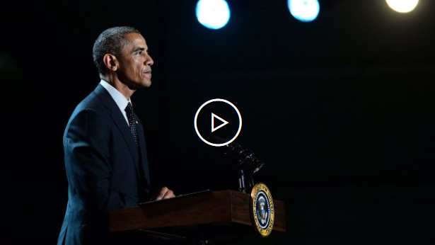

Obama on Ferguson
President Barack Obama appealed for calm Monday evening after the announcement that a grand jury declined to indict the Ferguson, Mo., police officer who shot and killed Michael Brown after an encounter in August. Speaking from the White House about an hour after St. Louis County Prosecutor Robert McCulloch announced the long-awaited decision
- See 20 Key Moments From Ferguson
- Inside the Tragedy of Ferguson
- No Indictment for Ferguson Cop